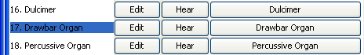
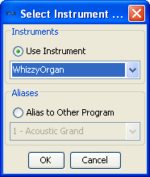

|
Mobileer Instrument Editor
CONFIDENTIAL and PROPRIETARY - © 2002-6 Mobileer Inc.
|
Creating a New Instrument
New Instruments are generally created by cloning an existing Instrument.
- Start by selecting the Orchestra Editor. Click on the second tab.
- Select an instrument similar to what you want to create by clicking once on the program name, next to the number in the leftmost column. For this tutorial, select "17. Drawbar Organ". It should now be highlighted.
- Select "Clone Drawbar Organ" from the "File" menu in the Orchestra window.
- A window titled "Drawbar Organ_b" will appear. This is a new Instrument based on the Drawbar Organ".
- Rename the Instrument by clicking on the "Name" button in the top left of the Window. Enter "WhizzyOrgan" or something more descriptive of your plans.
- Close the "WhizzyOrgan" window.
- Now let's use our WhizzyOrgan in place of the original Drawbar Organ. Click the button that says "Drawbar Organ" to the right of the line that says "17. Drawbar Organ".
- Click "Use Instrument" radio box.
- Scroll down and select "Whizzy Organ" then click OK.
| Top | Previous | Next |